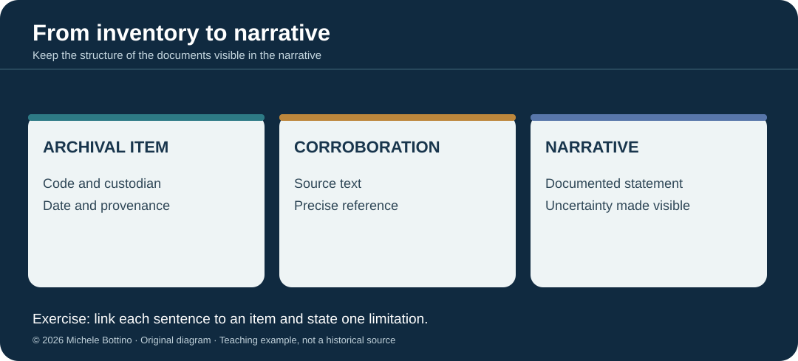

Officina delle Storie · Archives and heritage
Turning an archive into a narrative
Turn archival documents into a narrative for readers. Choose a thread and keep each source’s origins, relationships, citations and limitations visible throughout.
No previous course is required. Some experience in reading, summarising and writing is recommended. The final project is a narrative of 900–1,300 words with supporting documentation.

Learning objectives
- Define the question and audience for a narrative based on an archive.
- Inventory at least six items, retaining fonds, series, item, date and custodian.
- Link dates, people and places and indicate the degree of certainty.
- Build a table of claims with citations readers can check.
- Write an archival narrative of 900–1,300 words without inventing outcomes.
- Design an accessible route with captions, notes and a source register.
- Address privacy and rights, maintain version history and revise the work.
The course moves beyond general source checking and individual biography to examine relationships between items in an archive and how to build a verifiable narrative from them.
The ten units
Define the question, audience and boundaries of the narrative project.
Open lesson → (IT)Unit 2/10The fonds and its provenancePreserve hierarchies and relationships before extracting quotations.
Open lesson → (IT)Unit 3/10The documentary recordCreate descriptions others can reuse without introducing unsupported interpretations.
Open lesson → (IT)Unit 4/10Times, people and placesBuild timelines and authority records without inventing connections.
Open lesson → (IT)Unit 5/10Choosing a narrative threadTurn a dossier into an outline without distorting the evidence.
Open lesson → (IT)Unit 6/10From document to claimBuild a table that supports each significant statement.
Open lesson → (IT)Unit 7/10Voices and documents in the narrativeBring different forms of writing together without attributing undocumented words.
Open lesson → (IT)Unit 8/10From archive to visitor experienceDesign accessible formats that preserve the chain of evidence.
Open lesson → (IT)Unit 9/10Revision, protection and rightsPrepare a version that can be checked without disclosing inappropriate details.
Open lesson → (IT)Unit 10/10Workshop: the archival narrativeComplete and check a narrative dossier with its source apparatus.
Open lesson → (IT)Case A-01
The map room: seven invented documents, thirteen claims and questions, and a 1,055-word narrative. Trace the route from the inventory to the sequence presented to the public.
Proposed assessment rubric
| Criterion | Maximum |
|---|---|
| Provenance and arrangement | 20 |
| Evidence table and citations | 25 |
| Narrative structure and readability | 25 |
| Accessibility, privacy and rights | 15 |
| Revision and editorial apparatus | 15 |
| Total | 100 |
The proposed threshold is 70/100. No official assessment or certification is currently offered.
An exercise with authentic historical sources
To try the method with preserved documents, design four panels using three issues of the Morgan City Daily Review from 1918. Select, describe, arrange and attribute the items. The task calls for an exhibition design rather than a retelling of the historical article from the other course.
Final portfolio
A narrative of 900–1,300 words, at least six items with provenance and eight supporting references.
- Original narrative
- Annotated inventory of at least six items
- Timeline and table of claims
- Two captions with attributions
- Three revisions with reasons
- Note on provenance, rights and limitations
Work with an actual archive requires source checks and permission to consult and publish the material.
Progress and notebook
Loading from this device…
Export your portfolio to keep a copy outside the browser.